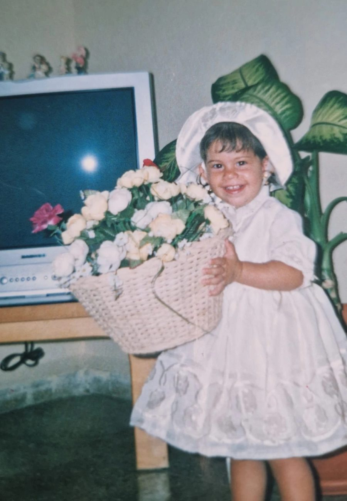

Cómo comenzó
Una niña entre flores.
Amanda creció en Cuba, en una casa con jardín donde las flores formaban parte de cada día. Allí, entre hojas enormes y colores tropicales, aprendió a mirarlas despacio: a fijarse en su forma, en su color, en cómo cambian con la luz.
Todavía no lo sabía, pero aquella niña con su cesta de flores ya estaba empezando a imaginar Aura Flowers.